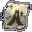

道具列表
[ 藥水 | 卷軸 | 食物 | 照明 | 圖騰 | 試煉 | 其他 ]
卷軸 Scrolls
| 圖片 | 中文名稱 | Name | 重量 | 材料 | 效果 |
| 鑑定卷軸 | Scroll of Identity | 0.63 | 紙 | 鑑定目標物品，鑑定後的物品會顯示其詳細資料，如用途、重量、材料等 | |
| 瞬間移動卷軸 | Scroll of Teleportation | 0.63 | 紙 | 隨機瞬間移動到同一地區上的位置，若配合瞬間移動控制戒指使用，或者是使用祝福的瞬間移動卷軸，則可以從書籤中選擇想去的地方 | |
| 傳送回家的卷軸 | Scroll of Escape | 0.63 | 紙 | 傳送到最接近的村莊，如果是有城或有盟屋的血盟成員，則會傳送到自己的城或盟屋 | |
 |
解除詛咒的卷軸 | Scroll of Curse Removal | 0.63 | 紙 | 解除中了詛咒的武器或防具 祝福的解除詛咒的卷軸更可以解除被詛咒的對盔甲或武器施法的卷軸 |
| 復活卷軸 | Scroll of Resurrection | 0.63 | 紙 | 復活目標玩家或NPC，復活後HP會有一半，部分NPC不能復活 | |
| 變身卷軸 | Scroll of Polymorph | 0.63 | 紙 | 將自己變身做怪物外型，時間為30分鐘，部分怪物不會主動攻擊變了怪獸的玩家 | |
| 對盔甲施法的卷軸 | Scroll of Enchant Armor | 0.63 | 紙 | 正常（白）：使目標防具的防禦值額外加1
詛咒（紅）：使目標防具的防禦力減1 祝福（黃）：使目標防具的防禦力額外加1至3，防具的額外防禦力越低，+2/+3的機會越高 |
|
| 對武器施法的卷軸 | Scroll of Enchant Weapon | 0.63 | 紙 | 正常（白）：使目標武器的防禦值額外加1
詛咒（紅）：使目標武器的防禦力減1 祝福（黃）：使目標武器的防禦力額外加1至3，防具的額外防禦力越低，+2/+3的機會越高 |
|
| 毀滅盔甲的卷軸 | Scroll of Destroy Armor | 0.63 | 紙 | 隨機毀滅身上已穿著的一件防具 | |
| 全體傳送術的卷軸 | Scroll of Mass Teleport | 0.63 | 紙 | 隨機將自己和身旁的盟友瞬間移動到同一地區上的位置，若配合瞬間移動控制戒指使用，可以從書籤中選擇想去的地方 | |
| 古老的卷軸 | Old Scroll | 紙 | 提供銀騎士試煉的提示 | ||
| 指定傳送卷軸(村莊) | Scroll of Escape to village | 紙 | |||
| 指定傳送卷軸(奇岩) | Scroll of Escape to Giran | 紙 | |||
| 指定傳送卷軸(歌唱之島) | Scroll of Escape to the Singing Island | 紙 | |||
| 指定傳送卷軸(隱藏之谷) | Scroll of Escape to the Hidden Valley | 紙 | |||
| 魔法卷軸(第一級) | Blank Spell Scroll (level 1) | 紙 | |||
| 魔法卷軸 | Spell Scroll | 紙 |
| Copyright(C) 1998-2001 Gabriel Leung
[網主介紹]. All
Right Reserved. 本網所有資料如非特別注明，全部都是由網主自己搜集得來的，如欲轉載必須注明其出處。 |